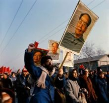

文化大革命

其发展过程分为三个阶段：
第一阶段：1966年5月“文化大革命”的发动到1969年4月中国共产党第九次全国代表大会的召开。这一阶段的中心任务，是摧毁所谓“资产阶级司令部”，向走资本主义道路的当权派“夺权”；目的是所谓变“资产阶级专政为无产阶级专政”；运动表现为“怀疑一切”、“打倒一切”、“全面内战”。这一时期，四人帮他们通过打击各地的党组织，逐渐获得党权利。
第二阶段：从1969年4月中共九大的召开到1973年8月中共十大的召开。这一阶段的主要内容，是林彪反革命集团阴谋夺取最高权力，策动反革命政变被粉碎。这一事件客观上宣告了“文化大革命”的失败。此后，周恩来主持中央日常工作，使各项工作有了转机。
第三阶段：从1973年8月中共十大召开到1976年10月“四人帮”被粉碎。这一时期，毛泽东同志及时发现了四人帮的阴谋，并对他们做出了严厉的批评。